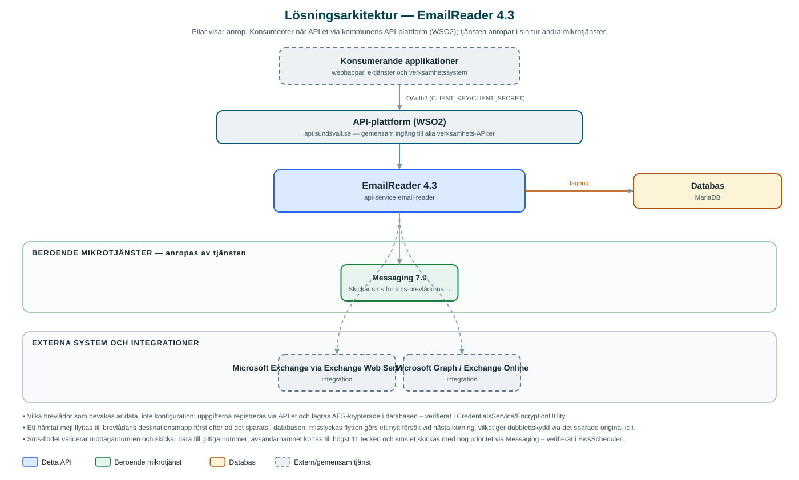

EmailReader
Läser av verksamheternas e-postlådor, lagrar inkomna meddelanden och gör dem hämtbara för andra system – med möjlighet att omvandla särskilda mejl till sms.
Om API:et
EmailReader är motsatsen till kommunens utskickstjänster: den tar hand om inkommande e-post. Tjänsten bevakar konfigurerade e-postlådor, hämtar nya meddelanden med bilagor och lagrar dem i en databas där konsumerande system – till exempel ärendehanteringsflöden – hämtar dem per kommun och namespace och tar bort dem när de behandlats.
Brevlådor kan läsas av på två sätt: via Exchange Web Services (EWS) eller via Microsoft Graph. Vilka brevlådor som bevakas styrs helt av data: inloggningsuppgifter registreras via API:et, knyts till kommun, namespace och destinationsmapp, och lagras krypterat i databasen. Efter att ett mejl hämtats och sparats flyttas det till destinationsmappen i brevlådan, så att inget läses dubbelt.
Utöver vanlig avläsning finns en sms-funktion: brevlådor med åtgärden SEND_SMS töms på mejl med fälten Recipient och Message, och innehållet skickas som sms med hög prioritet via Messaging-API:et. En daglig kontroll larmar dessutom via e-post om lagrade meddelanden blivit liggande längre än ett dygn utan att något system hämtat dem.
Det här gör API:et
- Avläsning av e-postlådor – Schemalagda jobb hämtar ny e-post via EWS eller Microsoft Graph, lagrar meddelanden med bilagor och flyttar originalet till en destinationsmapp.
- Hämta och radera e-post – Lagrade meddelanden listas per kommun och namespace, bilagor hämtas separat, och meddelanden raderas när konsumenten behandlat dem.
- Hantering av brevlådeuppgifter – Inloggningsuppgifter för EWS respektive Microsoft Graph administreras via API:et och lagras krypterade i databasen.
- Mejl till sms – Brevlådor med åtgärden SEND_SMS omvandlar mejl med fälten Recipient och Message till sms som skickas via Messaging med hög prioritet.
- Bevakning av liggande meddelanden – En schemalagd kontroll rapporterar via e-post när lagrade meddelanden är äldre än ett dygn.
API-dokumentation
API:ets samtliga resurser, parametrar och datamodeller finns beskrivna i en OpenAPI-specifikation som är hämtad ur källkodsförrådet. Den kan utforskas interaktivt i Swagger UI eller laddas ner som YAML. Programvaruförteckningen (SBOM) listar tjänstens samtliga tredjepartskomponenter med version och licens.
Teknisk dokumentation
Nedan beskrivs hur tjänsten är uppbyggd, vilka andra tjänster den anropar och vad som krävs för att driftsätta den. Informationen är härledd ur källkoden och dess konfiguration på GitHub.
Arkitektur

API:et är en mikrotjänst (Java 25, Spring Boot via kommunens gemensamma tjänsteplattform dept44 (8.0.8), byggd med Maven). Konsumenter når tjänsten via kommunens gemensamma API-plattform (WSO2) på api.sundsvall.se – tjänsten anropas aldrig direkt. Tjänsten anropar i sin tur andra mikrotjänster i kommunens tjänstelandskap. Lagring: MariaDB med Flyway-migrationer; inkomna e-postmeddelanden med bilagor samt krypterade brevlådeuppgifter lagras i databasen. Övriga integrationer som förekommer i koden: Microsoft Exchange via Exchange Web Services (EWS), Microsoft Graph / Exchange Online.
Teknikstack
- Språk: Java 25
- Ramverk: Spring Boot via kommunens gemensamma tjänsteplattform dept44 (8.0.8), byggd med Maven
- Databas: MariaDB med Flyway-migrationer; inkomna e-postmeddelanden med bilagor samt krypterade brevlådeuppgifter lagras i databasen
- Övrigt: EWS Java API, Microsoft Graph SDK, ShedLock för schemaläggningslås, AES-kryptering av lagrade inloggningsuppgifter
Beroenden till andra mikrotjänster
Tjänsten anropar följande mikrotjänster. Versionerna är hämtade ur källkodens integrationsklienter.
| Tjänst | Version | Användning |
|---|---|---|
| Messaging | 7.9 | Skickar sms för sms-brevlådorna samt e-postrapporter om meddelanden som blivit liggande. |
Programvaruförteckning
Tjänsten bygger på 342 tredjepartskomponenter fördelade på 17 olika licenser. Till skillnad från tabellen ovan, som listar andra mikrotjänster, avses här de programbibliotek som ingår i bygget. Se programvaruförteckningen för hela listan.
Konfiguration och driftsättning
- MariaDB-anslutning via miljövariabler; databasschemat versionshanteras med Flyway
- Krypteringsnyckel (SECRET_KEY) för lagrade brevlådeuppgifter
- Cron-uttryck per schemalagt jobb: EWS-avläsning, Graph-avläsning, sms-mejl och kontroll av gamla meddelanden (alla avstängda som standard)
- URL och OAuth2-klientuppgifter för Messaging-API:et
- Anrop görs per kommun – municipalityId ingår i alla API-vägar
Noterbart ur källkoden
- Vilka brevlådor som bevakas är data, inte konfiguration: uppgifterna registreras via API:et och lagras AES-krypterade i databasen – verifierat i CredentialsService/EncryptionUtility.
- Ett hämtat mejl flyttas till brevlådans destinationsmapp först efter att det sparats i databasen; misslyckas flytten görs ett nytt försök vid nästa körning, vilket ger dubblettskydd via det sparade original-id:t.
- Sms-flödet validerar mottagarnumren och skickar bara till giltiga nummer; avsändarnamnet kortas till högst 11 tecken och sms:et skickas med hög prioritet via Messaging – verifierat i EwsScheduler.
- Om lagrade meddelanden är äldre än ett dygn skickas en rapport per berörd kommun via Messaging, som signal om att konsumerande system inte hämtat sin e-post.
Källkod
Källkoden är öppen och finns hos Sundsvalls kommun på GitHub. I källkodsförrådet finns även instruktioner för att klona, konfigurera och starta tjänsten i egen miljö.